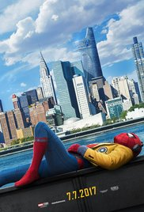

MY MOVIES
TOR 2 the dark world
CASTS
- Cast overview, first billed only:
- Chris Hemsworth ... Thor
- Natalie Portman ... Jane Foster
- Tom Hiddleston ... Loki
- Anthony Hopkins ... Odin
- Christopher Eccleston ... Malekith
- Jaimie Alexander ... Sif
- Zachary Levi ... Fandral
- Ray Stevenson ... Volstagg
- Tadanobu Asano ... Hogun
- Idris Elba ... Heimdall
- Rene Russo ... Frigga
- Adewale Akinnuoye-Agbaje ... Algrim / Kurse
- Kat Dennings ... Darcy Lewis
- Stellan Skarsgård ... Erik Selvig
- Alice Krige ... Eir
Details
- Action, Adventure, Sci-Fi
- 7 November 2013 (Russia)
Storyline
- Thousands of years ago, a race of beings known as Dark Elves tried to send the universe into darkness by using a weapon known as the Aether. Warriors from Asgard stop them but their leader Malekith escapes to wait for another opportunity. The warriors find the Aether and since it cannot be destroyed, they try to hide it. In the present day, Jane Foster awaits the return of Thor although it has been two years since they last saw once another. In the meantime, Thor has been trying to bring peace to the nine realms. Jane discovers an anomaly similar to the one that brought Thor to Earth. She goes to investigate, finds a wormhole, and is sucked into it. Back on Asgard, Thor wishes to return to Earth but his father, Odin refuses to let him. Thor learns from Heimdall, who can see into all of the realms, that Jane disappeared. Thor then returns to Earth just as Jane reappears. However, when some policemen try to arrest her, an unknown energy repulses them. Thor then brings Jane to Asgard to ... Written by rcs0411@yahoo.com
Plot Summary | Plot Synopsis
SPIDERMEN 4

CASTS
- Tom Holland ... Peter Parker / Spider-Man
- Michael Keaton ... Adrian Toomes / Vulture
- Robert Downey Jr. ... Tony Stark / Iron Man
- Marisa Tomei ... May Parker
- Jon Favreau ... Happy Hogan
- Gwyneth Paltrow ... Pepper Potts
- Zendaya ... Michelle
- Donald Glover ... Aaron Davis
- Jacob Batalon ... Ned
- Laura Harrier ... Liz
- Tony Revolori ... Flash
- Bokeem Woodbine ... Herman Schultz / Shocker #2
- Tyne Daly ... Anne Marie Hoag
- Abraham Attah ... Abe
- Hannibal Buress ... Coach Wilson
Details
- Action, Adventure, Sci-Fi
- 6 July 2017 (Russia)
Storyline
- Thrilled by his experience with the Avengers, Peter returns home, where he lives with his Aunt May, under the watchful eye of his new mentor Tony Stark, Peter tries to fall back into his normal daily routine - distracted by thoughts of proving himself to be more than just your friendly neighborhood Spider-Man - but when the Vulture emerges as a new villain, everything that Peter holds most important will be threatened. Written by Benett Sullivan
Plot Summary | Plot Synopsis
IRON MEN 4

CASTS
- Robert Downey Jr. ... Tony Stark / Iron Man
- Terrence Howard ... Rhodey
- Jeff Bridges ... Obadiah Stane
- Gwyneth Paltrow ... Pepper Potts
- Leslie Bibb ... Christine Everhart
- Shaun Toub ... Yinsen
- Faran Tahir ... Raza
- Clark Gregg ... Agent Coulson
- Bill Smitrovich ...General Gabriel
- Sayed Badreya ... Abu Bakaar
- Paul Bettany ... JARVIS (voice)
- Jon Favreau ... Hogan
- Peter Billingsley ... William Ginter Riva
- Tim Guinee ... Major Allen
- Will Lyman ... Award Ceremony Narrator (voice)
Details
- Action, Adventure, Sci-Fi
- 1 May 2008 (Russia)
Storyline
- Tony Stark. Genius, billionaire, playboy, philanthropist. Son of legendary inventor and weapons contractor Howard Stark. When Tony Stark is assigned to give a weapons presentation to an Iraqi unit led by Lt. Col. James Rhodes, he's given a ride on enemy lines. That ride ends badly when Stark's Humvee that he's riding in is attacked by enemy combatants. He survives - barely - with a chest full of shrapnel and a car battery attached to his heart. In order to survive he comes up with a way to miniaturize the battery and figures out that the battery can power something else. Thus Iron Man is born. He uses the primitive device to escape from the cave in Iraq. Once back home, he then begins work on perfecting the Iron Man suit. But the man who was put in charge of Stark Industries has plans of his own to take over Tony's technology for other matters. Written by halo1k
Plot Summary | Plot Synopsis
HULK

CASTS
- Edward Norton ... Bruce Banner / Hulk
- Liv Tyler ... Dr. Elizabeth 'Betty' Ross
- Tim Roth ... Emil Blonsky
- William Hurt ... General 'Thunderbolt' Ross
- Tim Blake Nelson ... Samuel Sterns
- Ty Burrell ... Dr. Leonard Samson
- Christina Cabot ... Major Kathleen Sparr
- Peter Mensah ... General Joe Greller
- Lou Ferrigno ... Security Guard / The Incredible Hulk - voice
- Paul Soles Paul Soles ... Stanley
- Débora Nascimento ... Martina
- Greg Bryk ... Commando
- Chris Owens ... Commando
- Al Vrkljan Al Vrkljan ... Commando (as Alan Vrkljan)
- Adrian Hein Adrian Hein ... Commando
Details
- Action, Adventure, Sci-Fi
- 12 June 2008 (Russia)
Storyline
- Depicting the events after the Gamma Bomb. 'The Incredible Hulk' tells the story of Dr Bruce Banner, who seeks a cure to his unique condition, which causes him to turn into a giant green monster under emotional stress. Whilst on the run from military which seeks his capture, Banner comes close to a cure. But all is lost when a new creature emerges; The Abomination. Written by Graham Kroon
Plot Summary | Plot Synopsis
home